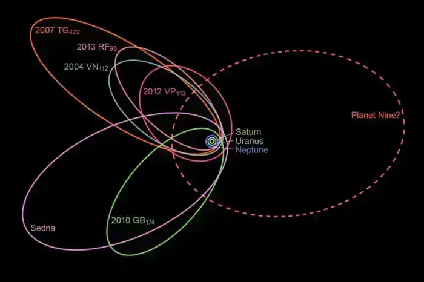

The anomaly
From 2014, several teams reported that a group of extreme trans-Neptunian objects have orbits that cluster in a way that is unlikely by chance. The favoured explanation, developed by Konstantin Batygin and Mike Brown in 2016, is a planet of about five to ten Earth masses on a distant, eccentric orbit — Planet Nine.
Maps, diagrams and images



In 2019 Jakub Scholtz and James Unwin proposed that the perturber could instead be a primordial black hole of similar mass, captured by the solar system. Primordial black holes are a real candidate for dark matter, and a small one would be almost undetectable except through its gravity.
The state of the evidence
The clustering itself is contested: later analyses of larger surveys found the apparent alignment weaker than first reported, and some found it consistent with observational bias. No object has been detected. A black hole version would be harder to detect than a planet, which is the argument's weakness as well as its point.
Documented: the clustering reports, and the Planet Nine model.
Contested: whether the clustering survives larger surveys and bias corrections.
Not detected: Planet Nine, or any black hole in the outer solar system.
Not favoured: the black hole version over the planet version, on evidence.
The honest label: fringe — a speculative variant of an already unconfirmed hypothesis.
Why it is in the archive
Because it shows how a hypothesis acquires variants before it has a detection, and because the black hole version is a good reminder that 'unseen object' is compatible with many kinds of unseen object.
Open resources on this topic
- PapersOpen-access articles: DOAJ · PubMed Central · Internet Archive Scholar
- BooksPublic-domain and borrowable copies: Open Library · Project Gutenberg · Google Books · Internet Archive
Cite this page
Momin, S. (2026). Planet Nine as a Black Hole. The Larger World Archive. https://drsamonline.github.io/LARGE_GLOBE/planet-nine-black-hole.htmlMomin, Sohil. “Planet Nine as a Black Hole.” The Larger World Archive, 2026, https://drsamonline.github.io/LARGE_GLOBE/planet-nine-black-hole.html.Momin, Sohil. “Planet Nine as a Black Hole.” The Larger World Archive, 2026. https://drsamonline.github.io/LARGE_GLOBE/planet-nine-black-hole.html.@misc{planet2026planet,
author = {Momin, Sohil},
title = {Planet Nine as a Black Hole},
year = {2026},
howpublished = {The Larger World Archive},
url = {https://drsamonline.github.io/LARGE_GLOBE/planet-nine-black-hole.html},
note = {Last reviewed 20 November 2026}
}Last reviewed 20 November 2026 · Corrections policy · this page is not peer reviewed
Sources for this page
- Wikipedia, “Planet Nine” — the hypothesis and its statusen.wikipedia.org
- Wikipedia, “Primordial black hole” — the object the variant proposesen.wikipedia.org
- Wikipedia, “Extreme trans-Neptunian object” — the evidence baseen.wikipedia.org
- Wikipedia, “Kuiper belt” — the region being surveyeden.wikipedia.org
- Archive.org — a paper on solar obliquity induced by Planet Ninearchive.org/details/arxiv-1607.03963